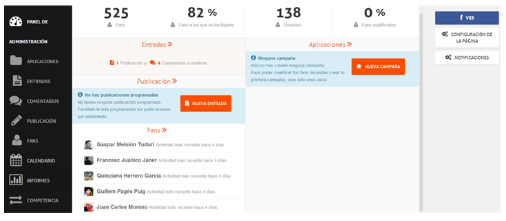

Se trata de una herramienta de análisis de páginas de Facebook.
Aunque también puede ser usada para monitorizar tu Twitter e Instagram
A diferencia de otras aplicaciones para gestionar redes sociales,
para Facebook AgoraPulse solo sirve en páginas

Lo mejor de AgoraPulse:
Ayuda a diseñar campañas de marketing más adecuadas y exitosas.
Está completamente integrado con Facebook.
Es una potente herramienta Social CRM (Customer Relationship Management)
ayudando eficazmente a gestionar la administración con los cliente y con los
clientes potenciales.
Entiende, analiza y evalúa el rendimiento de tu página en Facebook.
Establece comparativas con tus competidores.
Puedes usar las aplicaciones que te ofrece para realizar campañas tales
como Votación de los fans, Concurso fotográfico, Sorteos, etc.
¿Por qué usar Hootsuite?
- Ahorra tiempo poniendo el mismo mensaje en varias redes sociales a la vez.